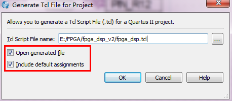
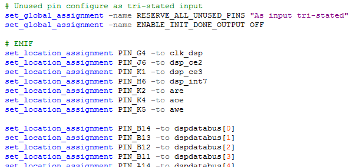
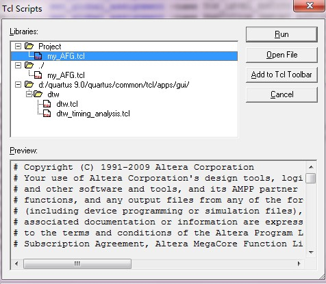
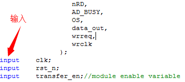
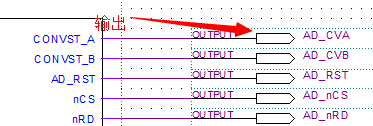

Project -> Generate Tcl File for Project...弹出如下对话框，设置脚本路径。

使用set_location_assignment分配管脚如下：

第一次配制时，没有set_location_assignment语句，自已在set_global_assignment语句下一行添加即可。
Tools -> Tcl Scripts...
选中刚新建的Tcl文件，点击Run运行即可！
1. 为什么Tcl中没有为每个引脚分配输入输出属性，也能保证引脚属性正确？
因为引脚输入输出属性都已经在Verilog语言的module中或原理图中设置了，如下图，
 